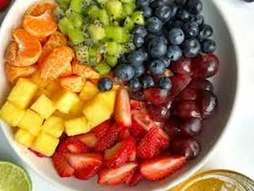

Fruit!
this will include: berries, strawberries, watermelon, blackberries, and lemon!

i love fruit because it is so refreshing and reminds me of summer!
Ways to Make Fruit:
#1: Fruit Salad
you can mix a bunch of fruit together to make a salad! By doing this, you can have lots of different fruits at once and combine different flavors. My reccomendation is mixing tropical fruits together or barries together (keep the types of fruits together).
#2: Tarts, Pies, and More!
This is harder to make but you can look up recipies to make with your favorite fruits in them. my favorites are lemon tarts/bars, cherry and apple pie, and bannana bread!
#3: Fruit With Chocolate Sauce
This is my favorite thing to do with fruit when I dont feel like eating it plain. i cut up strawberries or other berries and cover them in chocolate sause. a helpful tip of mine is using just one fruit or else it tastes very busy.